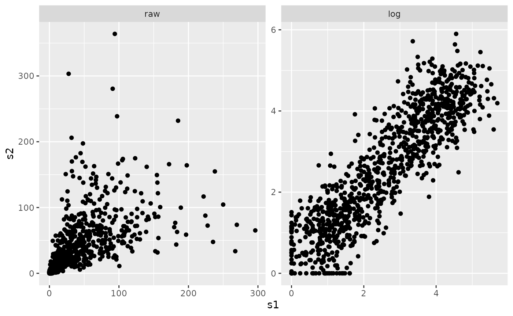
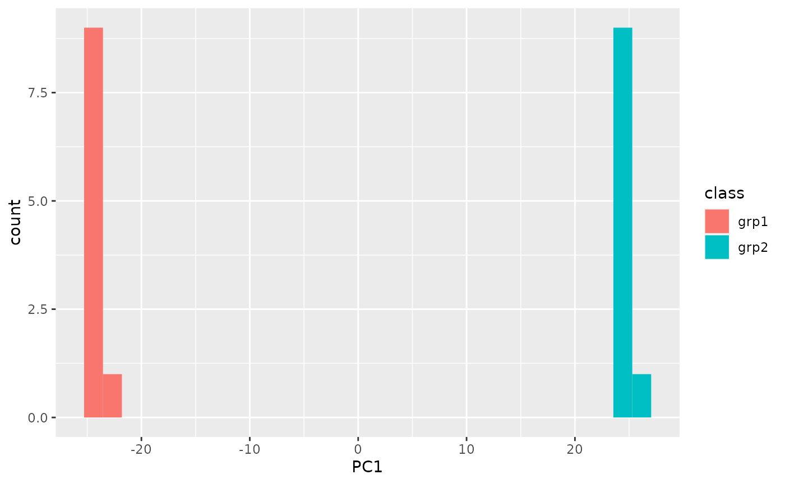

Purpose
Principal components analysis (PCA) and related methods are very useful data decomposition methods. However, when one has hundreds or thousands of variables as many -omics methods do, any information beyond just examining PC1 and PC2 is often lost.
However, there may be opportunities to examine the association of sample scores on each principal component to see if they are associated with any particular sample variable of interest. Following that, we can test the loadings of the variables on that PC to see if any are significantly associated with that PC. These variables may describe something important about the data that doesn’t just come from statistically significant differential differences.
Data
The data we will use is completely artificial, in that the differences are extreme and completely made up. We have 20 samples, 10 in each class, and 1000 variables.
data("grp_exp_data")
data_matrix = grp_exp_data$data
rownames(data_matrix) = paste0("f", seq(1, nrow(data_matrix)))
colnames(data_matrix) = paste0("s", seq(1, ncol(data_matrix)))
sample_info <- data.frame(id = colnames(data_matrix), class = grp_exp_data$class)
dim(data_matrix)
#> [1] 1000 20This data has a proportional variance structure, where the variance increases with the value. We can see this by examining a plot of two columns in raw and log-transformed values.
data_df = as.data.frame(data_matrix)
log_df = log1p(data_df)
raw_plot = ggplot(data_df, aes(x = s1, y = s2)) + geom_point()
log_plot = ggplot(log_df, aes(x = s1, y = s2)) + geom_point()
raw_plot + log_plot
PCA
We will use the log-transformed values, because PCA doesn’t do well with proportional variance data.
We can summarize the variances of each principal component.
log_variances = visqc_score_contributions(log_pca$x)
knitr::kable(log_variances)| pc | variance | percent | cumulative | labels | |
|---|---|---|---|---|---|
| PC1 | PC1 | 630.300641 | 0.7474956 | 0.7474956 | PC1 (75%) |
| PC2 | PC2 | 15.260619 | 0.0180981 | 0.7655937 | PC2 (1.8%) |
| PC3 | PC3 | 14.393039 | 0.0170692 | 0.7826629 | PC3 (1.7%) |
| PC4 | PC4 | 13.998044 | 0.0166008 | 0.7992637 | PC4 (1.7%) |
| PC5 | PC5 | 13.624605 | 0.0161579 | 0.8154216 | PC5 (1.6%) |
| PC6 | PC6 | 13.191010 | 0.0156437 | 0.8310653 | PC6 (1.6%) |
| PC7 | PC7 | 12.649098 | 0.0150010 | 0.8460663 | PC7 (1.5%) |
| PC8 | PC8 | 12.395460 | 0.0147002 | 0.8607665 | PC8 (1.5%) |
| PC9 | PC9 | 11.904228 | 0.0141176 | 0.8748841 | PC9 (1.4%) |
| PC10 | PC10 | 11.803515 | 0.0139982 | 0.8888823 | PC10 (1.4%) |
| PC11 | PC11 | 11.425450 | 0.0135498 | 0.9024322 | PC11 (1.4%) |
| PC12 | PC12 | 11.294834 | 0.0133949 | 0.9158271 | PC12 (1.3%) |
| PC13 | PC13 | 10.735845 | 0.0127320 | 0.9285591 | PC13 (1.3%) |
| PC14 | PC14 | 10.627450 | 0.0126035 | 0.9411626 | PC14 (1.3%) |
| PC15 | PC15 | 10.585936 | 0.0125542 | 0.9537168 | PC15 (1.3%) |
| PC16 | PC16 | 10.338576 | 0.0122609 | 0.9659777 | PC16 (1.2%) |
| PC17 | PC17 | 10.188966 | 0.0120835 | 0.9780612 | PC17 (1.2%) |
| PC18 | PC18 | 9.646507 | 0.0114401 | 0.9895013 | PC18 (1.1%) |
| PC19 | PC19 | 8.852683 | 0.0104987 | 1.0000000 | PC19 (1%) |
| PC20 | PC20 | 0.000000 | 0.0000000 | 1.0000000 | PC20 (0.0000000000000000000000000000041%) |
And we can add the scores to the sample info so we can plot them by sample type.
log_scores = cbind(as.data.frame(log_pca$x), sample_info)
ggplot(log_scores, aes(x = PC1, y = PC2, color = class)) + geom_point()
Great, our class variable is definitely associated with PC1. What if there was some variable we were interested in knowing if there was a PC associated with it?
Test PCs
The only one here should be PC1, but lets go through and test them anyway.
pc_stats = visqc_test_pca_scores(log_pca$x, sample_info[, c("class"), drop = FALSE])
knitr::kable(pc_stats)| term | df | sumsq | meansq | statistic | p.value | PC | variable |
|---|---|---|---|---|---|---|---|
| x | 1 | 1.196857e+04 | 1.196857e+04 | 3.015770e+04 | 0.0000000 | PC1 | class |
| x | 1 | 3.780000e-05 | 3.780000e-05 | 2.300000e-06 | 0.9987946 | PC2 | class |
| x | 1 | 7.243800e-03 | 7.243800e-03 | 4.768000e-04 | 0.9828191 | PC3 | class |
| x | 1 | 1.084890e-02 | 1.084890e-02 | 7.343000e-04 | 0.9786802 | PC4 | class |
| x | 1 | 1.150000e-05 | 1.150000e-05 | 8.000000e-07 | 0.9992956 | PC5 | class |
| x | 1 | 7.713200e-03 | 7.713200e-03 | 5.540000e-04 | 0.9814812 | PC6 | class |
| x | 1 | 1.605300e-03 | 1.605300e-03 | 1.202000e-04 | 0.9913719 | PC7 | class |
| x | 1 | 0.000000e+00 | 0.000000e+00 | 0.000000e+00 | 0.9999533 | PC8 | class |
| x | 1 | 1.384000e-04 | 1.384000e-04 | 1.100000e-05 | 0.9973883 | PC9 | class |
| x | 1 | 5.684000e-04 | 5.684000e-04 | 4.560000e-05 | 0.9946852 | PC10 | class |
| x | 1 | 1.231200e-02 | 1.231200e-02 | 1.020900e-03 | 0.9748619 | PC11 | class |
| x | 1 | 5.503900e-03 | 5.503900e-03 | 4.617000e-04 | 0.9830942 | PC12 | class |
| x | 1 | 2.510000e-04 | 2.510000e-04 | 2.220000e-05 | 0.9962966 | PC13 | class |
| x | 1 | 2.671100e-03 | 2.671100e-03 | 2.381000e-04 | 0.9878581 | PC14 | class |
| x | 1 | 1.366700e-03 | 1.366700e-03 | 1.223000e-04 | 0.9912975 | PC15 | class |
| x | 1 | 2.072800e-02 | 2.072800e-02 | 1.899600e-03 | 0.9657156 | PC16 | class |
| x | 1 | 5.379520e-02 | 5.379520e-02 | 5.003300e-03 | 0.9443896 | PC17 | class |
| x | 1 | 2.221000e-04 | 2.221000e-04 | 2.180000e-05 | 0.9963248 | PC18 | class |
| x | 1 | 3.670000e-05 | 3.670000e-05 | 3.900000e-06 | 0.9984416 | PC19 | class |
| x | 1 | 0.000000e+00 | 0.000000e+00 | 9.185785e-01 | 0.3505460 | PC20 | class |
As this is an artificial data-set, we expect that only PC1 is going to come back with something significant. We can double check the ANOVA results by plotting the scores in one-dimension as well.
ggplot(log_scores, aes(x = PC1, fill = class)) + geom_histogram(bins = 30, position = "identity")
Again, this is a contrived example, so things separate really, really well.
Test Loadings
We can also run a statistical test on the loadings for each variable on each PC. The way this works is to construct a null distribution of loadings from all of the other variables in all of the other PCs outside of the current one being tested. We will test both PC1 and PC2 here, because we don’t really expect that there should be that many on PC2. Note that for a large number of variables, this will take some time, because a slightly different null is created for each variable by excluding that variables loadings in the other PCs.
loading_sig = visqc_test_pca_loadings(log_pca$rotation, test_columns = c("PC1", "PC2"), progress = FALSE)